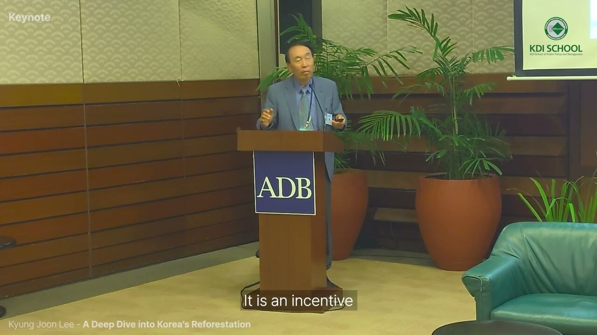
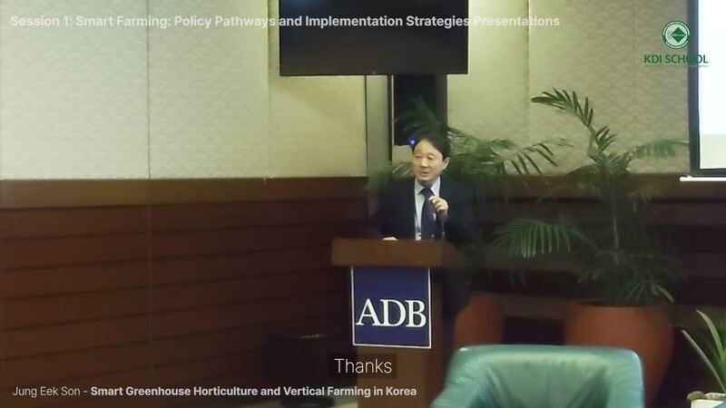
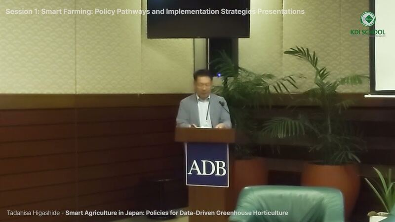
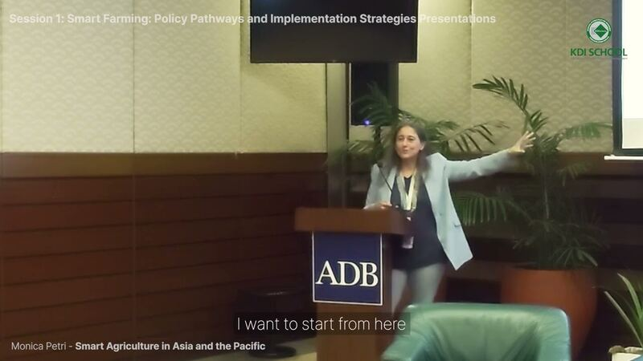
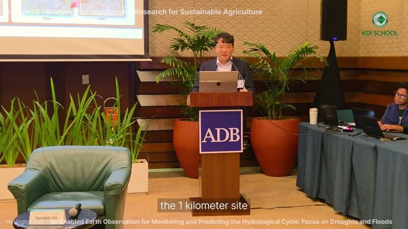
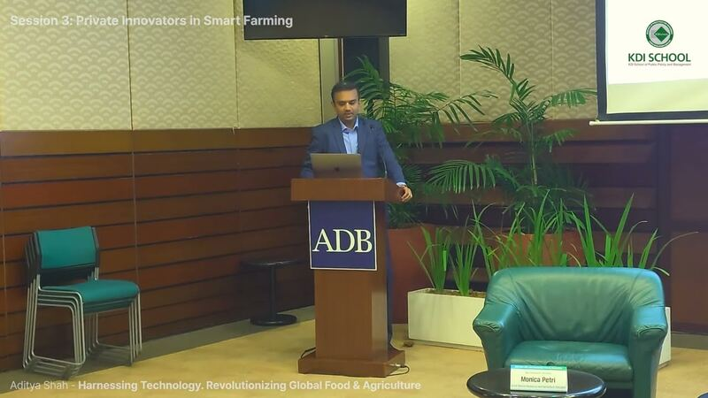
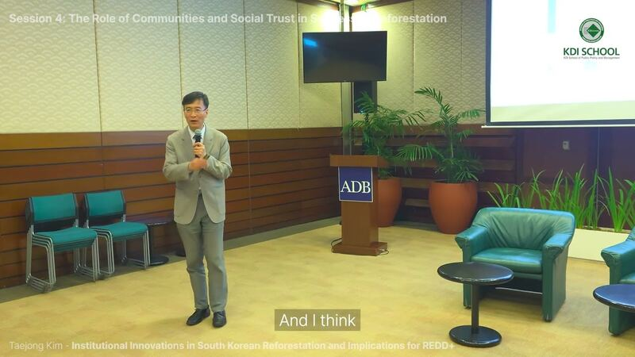
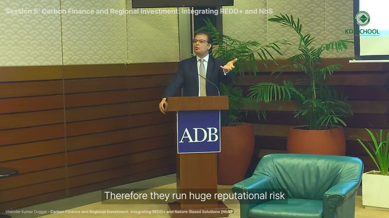
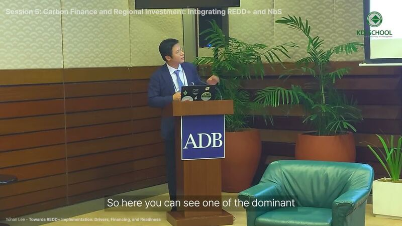

Session 1
PDF
Session 1
PDF
Il Jeong Jeong
Former Director General for International Cooperation Bureau
Ministry of Agriculture, Food and Rural Affairs, Republic of Korea
KDI School – ADB Joint Conference for Global Alumni
ADB Headquarters, Manila · April 22–23, 2026
Korea's Development Pathways
and Lessons for Asia and the Pacific

PDFKeynote
Kyung Joon Lee
Professor Emeritus
Department of Forest Sciences, Seoul National University
The archive
Keynote presentations and session videos from the April conference — revisit the experiences and insights shared by international experts.
Showing 12 of 13 talks
Session 1
PDF
Il Jeong Jeong
Former Director General for International Cooperation Bureau
Ministry of Agriculture, Food and Rural Affairs, Republic of Korea

Session 1 PDFJung Eek Son
Chairman / Director · Professor Emeritus
Korea Smart Farm R&D Foundation · Dept. of Agriculture, Forestry & Bioresources, Seoul National University

Session 1 PDFTadahisa Higashide
Director, Institute of Vegetable and Floriculture Science
National Agriculture and Food Research Organization (NARO)

Session 1 PDFMonica Petri
Senior Natural Resources and Agriculture Specialist
Asian Development Bank (ADB)
 Session 2
PDF
Session 2
PDF
Yvonne Pinto
Director General
International Rice Research Institute (IRRI)

Session 2 PDFHyunglok Kim
Professor
Gwangju Institute of Science and Technology (GIST)
 Session 3
PDF
Session 3
PDF
Jong Myung Lee
Task Leader
LG CNS

Session 3 PDFAditya Shah
Global Director
Cropin

Session 4 PDFTaejong Kim
Professor
KDI School of Public Policy and Management
 Session 5
PDF
Session 5
PDF
Stephanie Tam
Senior Climate Finance Specialist
World Bank

Session 5 PDFVirender Kumar Duggal
Principal Climate Change Specialist
Climate Change and Sustainable Development Department, Asian Development Bank (ADB)

Session 5 PDFYohan Lee
Professor
Department of Forest Sciences, Seoul National University
Share your policy case and connect with the global KDIS community shaping the future of agriculture and forestry.